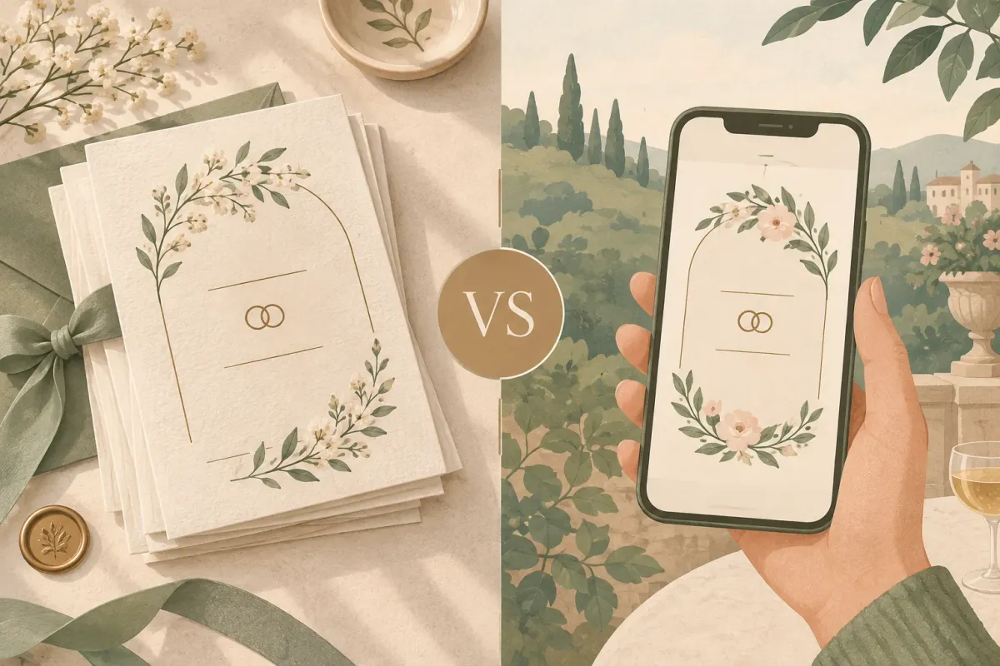

Thiệp cưới online là thiệp mời dạng trang web, mở bằng một đường link hoặc mã QR, chứa tên cô dâu chú rể, ngày giờ, địa điểm, ảnh cưới và mọi thông tin cần thiết cho khách mời. So với thiệp giấy, thiệp online gửi tức thì, chi phí thấp hơn 5–10 lần, và có tính năng tương tác như RSVP xác nhận tham dự, bản đồ chỉ đường, QR mừng cưới. Xu hướng 2025–2026 cho thấy nhiều cặp đôi kết hợp cả hai: thiệp giấy cho họ hàng lớn tuổi, thiệp online cho bạn bè và đồng nghiệp. Bài viết này giúp bạn hiểu rõ từng khía cạnh để chọn đúng cách mời phù hợp gia đình mình.
Đọc thêm: Xem mẫu thiệp cưới online · Bảng giá thiệp cưới online · RSVP đám cưới là gì — cách xác nhận khách tham dự
Thiệp cưới online là gì?
Thiệp cưới online là thiệp mời dạng trang web — một đường link duy nhất chứa tên cô dâu chú rể, ngày giờ, địa điểm, bản đồ, ảnh cưới, nhạc nền và nút xác nhận tham dự. Khách bấm vào link trên Zalo, Messenger hoặc tin nhắn là mở được ngay trên điện thoại, không cần cài ứng dụng hay đăng ký tài khoản.
Khái niệm thiệp mời đã tồn tại hàng trăm năm, nhưng phiên bản số hoá chỉ phổ biến tại Việt Nam từ khoảng năm 2020 — khi đại dịch khiến nhiều cặp đôi cần gửi thiệp mà không gặp mặt trực tiếp. Đến 2026, thiệp cưới online (còn gọi là thiệp cưới điện tử, e-invitation, thiệp cưới digital) trở thành lựa chọn song song với thiệp giấy truyền thống.
Thiệp cưới online = 1 trang web riêng + 1 link duy nhất. Gửi qua Zalo, Messenger, SMS. Khách mở ngay, không cần cài app.
Thiệp cưới online trông như thế nào?
Một thiệp cưới online là trang web cuộn dọc, chia thành nhiều phần (section): phong bì mở ra → tên cô dâu chú rể → câu chuyện tình yêu → thông tin lễ cưới → bản đồ → album ảnh → RSVP → lời chúc → QR mừng cưới. Mỗi phần có hiệu ứng chuyển động (animation) khi cuộn, kèm nhạc nền tự động phát.
Khác với ảnh thiệp gửi qua Zalo (chỉ là 1 tấm hình tĩnh, không bấm được, không xác nhận tham dự), thiệp online là trang web tương tác — khách bấm nút RSVP để xác nhận, bấm bản đồ để mở Google Maps, và gửi lời chúc trực tiếp trên thiệp.
Các tên gọi khác của thiệp cưới online
Bạn có thể gặp nhiều cách gọi: thiệp cưới điện tử, thiệp cưới digital, e-invitation, thiệp mời online, thiệp cưới 4.0. Tất cả chỉ cùng một thứ: thiệp mời dạng trang web, gửi bằng link, khách mở trên trình duyệt điện thoại.
Thiệp cưới online có những tính năng gì mà thiệp giấy không có?
Có 6 tính năng chính: xác nhận tham dự (RSVP), bản đồ chỉ đường, QR mừng cưới, đếm ngược ngày cưới, album ảnh và lời chúc — tất cả trên cùng một trang, khách mở link là thấy.
RSVP — xác nhận tham dự, chốt số bàn
Tính năng quan trọng nhất mà thiệp giấy không thể có: khách bấm nút xác nhận tham dự đám cưới (RSVP) ngay trên thiệp, chọn số người đi cùng. Kết quả lưu vào Google Sheets, giúp cô dâu chú rể đếm khách chính xác thay vì ước lượng. Nếu khách huỷ, họ cập nhật lại mà không cần gọi điện.
QR mừng cưới — chuyển khoản không cần gõ số tài khoản
Khách bấm vào mục QR mừng cưới — chuyển khoản không cần số tài khoản, quét mã bằng app ngân hàng, số tiền và nội dung chuyển khoản được điền sẵn. Không cần hỏi số tài khoản, không sợ chuyển nhầm người.
Bản đồ, nhạc nền, đếm ngược, album ảnh, lời chúc
Bản đồ Google Maps nhúng trực tiếp trên thiệp — khách bấm là mở được chỉ đường. Đồng hồ đếm ngược hiển thị "còn X ngày X giờ" tạo cảm giác mong đợi. Album ảnh (gallery) cho phép chèn 10–20 ảnh cưới với lightbox phóng to. Và mục lời chúc để khách viết lời hay, hiển thị dạng bong bóng bay lên theo thời gian thực.
Gửi link thiệp kèm lời nhắn cá nhân ("Anh Minh ơi, em gửi anh thiệp mời đám cưới ạ") thay vì gửi link trơn. Khách mở nhiều hơn, lời chúc cũng nhiều hơn.
So sánh thiệp cưới online và thiệp giấy: chi phí, tính năng, cách gửi
Thiệp giấy trang trọng, cầm nắm được, phù hợp họ hàng lớn tuổi. Thiệp online chi phí 150.000–500.000đ cho không giới hạn khách, gửi tức thì, sửa được sau khi gửi. Bảng dưới đây so sánh 7 tiêu chí để bạn thấy rõ từng mặt mạnh.

| Tiêu chí | Thiệp giấy | Thiệp cưới online |
|---|---|---|
| Chi phí | 1,5–5 triệu (200–300 thiệp, gồm thiết kế + in + phong bì) | 150.000–500.000đ cho toàn bộ khách mời, không giới hạn số lượng |
| Thời gian hoàn thành | 5–10 ngày (thiết kế + in + vận chuyển) | 24 giờ (chọn mẫu, gửi thông tin, nhận link) |
| Cách gửi | Trao tay hoặc gửi bưu điện | Gửi link qua Zalo, Messenger, SMS, email — tức thì |
| Tính năng tương tác | Không có | RSVP, bản đồ, QR mừng cưới, lời chúc, đếm ngược, nhạc, album ảnh |
| Sửa lỗi sau khi gửi | Phải in lại toàn bộ (thêm chi phí + thời gian) | Sửa trực tiếp, link không đổi, khách mở lại thấy bản mới |
| Trang trọng | Cao — cầm nắm được, chất liệu giấy đẹp | Trung bình — sang trọng tuỳ thiết kế, nhưng không cầm tay được |
| Phù hợp người lớn tuổi | Rất phù hợp — quen thuộc, "đàng hoàng" | Cần hướng dẫn — một số cần con cháu mở hộ |
Về chi phí, con số 1,5–5 triệu cho thiệp giấy bao gồm thiết kế, in ấn 200–300 tấm, phong bì và vận chuyển (theo MiuWedding, 2025). Thiệp online loại bỏ toàn bộ chi phí in ấn và vận chuyển, nên chênh lệch 5–10 lần là thực tế. Mặt khác, thiệp giấy vẫn giữ lợi thế về cảm giác trang trọng mà nhiều gia đình Việt coi trọng.
Xem hơn 50 mẫu thiệp cưới online
Chọn phong cách, gửi thông tin, nhận thiệp trong 24h — đủ RSVP, bản đồ, QR mừng cưới, nhạc nền.
Thiệp cưới online giá bao nhiêu? Các mức giá phổ biến 2026
Giá phổ biến từ miễn phí (tự tạo bằng Canva, hạn chế tính năng) đến 150.000–500.000đ (dịch vụ chuyên nghiệp, đủ RSVP, QR, bản đồ). Thiệp thiết kế riêng theo yêu cầu có thể từ 500.000–2.000.000đ.
Thiệp miễn phí — tự tạo bằng Canva hoặc công cụ trực tuyến
Canva, Biihappy và một số nền tảng cho phép tạo thiệp miễn phí. Ưu điểm: không mất tiền. Nhược điểm: thường chỉ xuất ra ảnh tĩnh hoặc PDF, không có RSVP, không có bản đồ nhúng, không có QR mừng cưới, thiết kế bị giới hạn template có sẵn, và có thể gắn watermark.
Thiệp dịch vụ 150.000–500.000đ — đủ tính năng, có hỗ trợ
Đây là phân khúc phổ biến nhất. Các dịch vụ thiệp cưới online chuyên nghiệp (Templexa, KissWe, TheSimple...) cung cấp thiệp dạng trang web, đầy đủ RSVP, bản đồ, nhạc, hiệu ứng, hỗ trợ chỉnh sửa. Tại Templexa, gói Basic giá 150.000đ gồm 20+ mẫu, RSVP, Google Maps, QR mừng cưới, nhạc nền, giao thiệp trong 24h. Gói Premium giá 199.000đ thêm lời chúc bay bong bóng, cá nhân hoá tên từng khách mời bằng link riêng và chỉnh sửa 3 lần.
Thiệp custom 500.000–2.000.000đ — thiết kế riêng hoàn toàn
Với cặp đôi muốn thiệp độc bản — bảng màu, font chữ, layout, hiệu ứng đều theo ý — chi phí dao động 500.000–2.000.000đ tuỳ mức độ phức tạp. Gói Custom tại Templexa được báo giá riêng, bao gồm thiết kế giao diện mới 100%, tư vấn phong cách 1:1, chỉnh sửa không giới hạn và hỗ trợ đến ngày cưới.
Xem chi tiết và so sánh các gói tại trang bảng giá thiệp cưới online.
Có nên dùng thiệp cưới online không? Khi nào phù hợp, khi nào nên giữ thiệp giấy?
Nên dùng khi mời bạn bè, đồng nghiệp, khách ở xa. Nên giữ thiệp giấy khi mời bố mẹ, họ hàng lớn tuổi, hoặc theo phong tục địa phương yêu cầu "đưa thiệp tận tay".
4 trường hợp nên dùng thiệp online
- Bạn bè và đồng nghiệp — quen nhắn tin, mở link dễ dàng, RSVP giúp đếm khách chính xác
- Khách ở xa hoặc ở nước ngoài — gửi link tức thì thay vì chờ bưu điện 3–5 ngày
- Ngân sách hạn chế — 150.000–200.000đ cho toàn bộ khách thay vì 2–3 triệu in ấn
- Cần sửa thông tin sau khi gửi — đổi giờ, đổi địa điểm, sửa lỗi chính tả: cập nhật ngay, link không đổi
3 trường hợp nên giữ thiệp giấy
- Bố mẹ, ông bà, họ hàng lớn tuổi — nhiều người vẫn xem thiệp trao tay là "đàng hoàng" và trang trọng
- Phong tục địa phương yêu cầu thiệp tay — một số vùng miền Bắc và Trung, mời cưới phải có thiệp giấy kèm trầu cau
- Cô dâu chú rể thích lưu giữ thiệp cưới làm kỷ niệm — thiệp giấy có thể đóng khung, ép nhựa, để trong album
Giải pháp phổ biến nhất: kết hợp cả hai
In 50–100 thiệp giấy cho họ hàng thân và khách quan trọng (chi phí 400.000–800.000đ). Dùng thiệp online cho tất cả khách còn lại (150.000–200.000đ). Tổng chi phí 550.000–1.000.000đ — tiết kiệm 50–70% so với in toàn bộ, mà vẫn giữ được nét trang trọng với người lớn.
Một mẹo thêm: in mã QR dẫn đến thiệp online ngay trên thiệp giấy. Khách nhận thiệp giấy vẫn mở được thiệp online để xem bản đồ, RSVP và gửi lời chúc. Trước khi đặt thiệp, bạn có thể chọn tháng đại lợi và xem ngày cưới đẹp theo tuổi để chốt ngày trước.
Đừng gửi thiệp online cho bố mẹ chồng/vợ hoặc trưởng họ mà không có thiệp giấy kèm theo — dù thiệp online đẹp đến đâu, một số người lớn vẫn xem đó là "không nghiêm túc".
Quy trình đặt thiệp cưới online trong 3 bước — từ chọn mẫu đến gửi khách
3 bước: chọn mẫu phù hợp phong cách, gửi thông tin (tên, ngày, ảnh), nhận link thiệp trong 24h và gửi cho khách. Toàn bộ quy trình diễn ra qua Zalo hoặc form trực tuyến, không cần gặp trực tiếp.
Bước 1 — Chọn mẫu thiệp
Mở kho mẫu thiệp cưới, lọc theo phong cách (sang trọng, truyền thống, hoa, hiện đại, minimalist, vintage). Bấm vào mẫu để xem demo đầy đủ — cuộn qua từng section, nghe nhạc, thử RSVP. Chọn mẫu ưng ý rồi ghi lại tên hoặc mã mẫu.
Bước 2 — Gửi thông tin
Gửi cho bên làm thiệp: tên cô dâu chú rể (có dấu), ngày giờ và địa điểm lễ ăn hỏi / lễ cưới / tiệc, 5–15 ảnh cưới, nhạc nền (nếu muốn bài riêng), số tài khoản ngân hàng (cho QR mừng cưới). Gửi qua Zalo, Messenger hoặc form trên trang Dịch vụ.
Bước 3 — Nhận link, kiểm tra, gửi khách
Trong vòng 24h, bạn nhận link thiệp hoàn chỉnh. Kiểm tra từng mục: tên có đúng dấu không, ngày giờ có chính xác không, bản đồ có dẫn đúng nhà hàng không. Sai chỗ nào thì báo sửa (gói Basic sửa 1 lần, Premium sửa 3 lần). Xong — copy link, gửi từng người hoặc chia sẻ vào nhóm chat.
"Em gửi anh/chị thiệp mời đám cưới ạ. Anh/chị bấm vào link xem thiệp, tiện xác nhận tham dự giúp em để em chốt số bàn nhé. Em cảm ơn ạ!" — Câu mẫu gửi kèm link thiệp qua Zalo
Câu hỏi thường gặp về thiệp cưới online
Thiệp cưới online là gì?
Thiệp cưới online giá bao nhiêu?
Thiệp cưới online có thay thế hoàn toàn thiệp giấy không?
Người lớn tuổi có mở được thiệp online không?
Có sửa được thiệp sau khi đã gửi không?
Thiệp cưới online có RSVP không?
Gửi thiệp online qua Zalo có bất lịch sự không?
Thiệp cưới online dùng được cho sự kiện nào khác?
Lời cuối
Thiệp cưới online là trang web mời cưới có đầy đủ thông tin, tính năng tương tác, chi phí từ 150.000đ và gửi được cho hàng trăm khách trong vài phút. Thiệp giấy vẫn giữ chỗ đứng trong những dịp cần sự trang trọng trao tay. Lựa chọn tốt nhất cho phần lớn cặp đôi 2026: kết hợp cả hai — in ít thiệp giấy cho họ hàng, dùng thiệp online cho bạn bè và đồng nghiệp.
Khám phá thêm: Thiệp mời sinh nhật, thôi nôi online · Câu hỏi thường gặp về thiệp online · Cẩm nang thiệp cưới & lời mời
Templexa
Đội ngũ làm thiệp cưới online tại Templexa — mỗi tuần trò chuyện với hàng chục cặp đôi sắp cưới, và viết lại những gì đã học được trong Cẩm nang cưới hỏi.